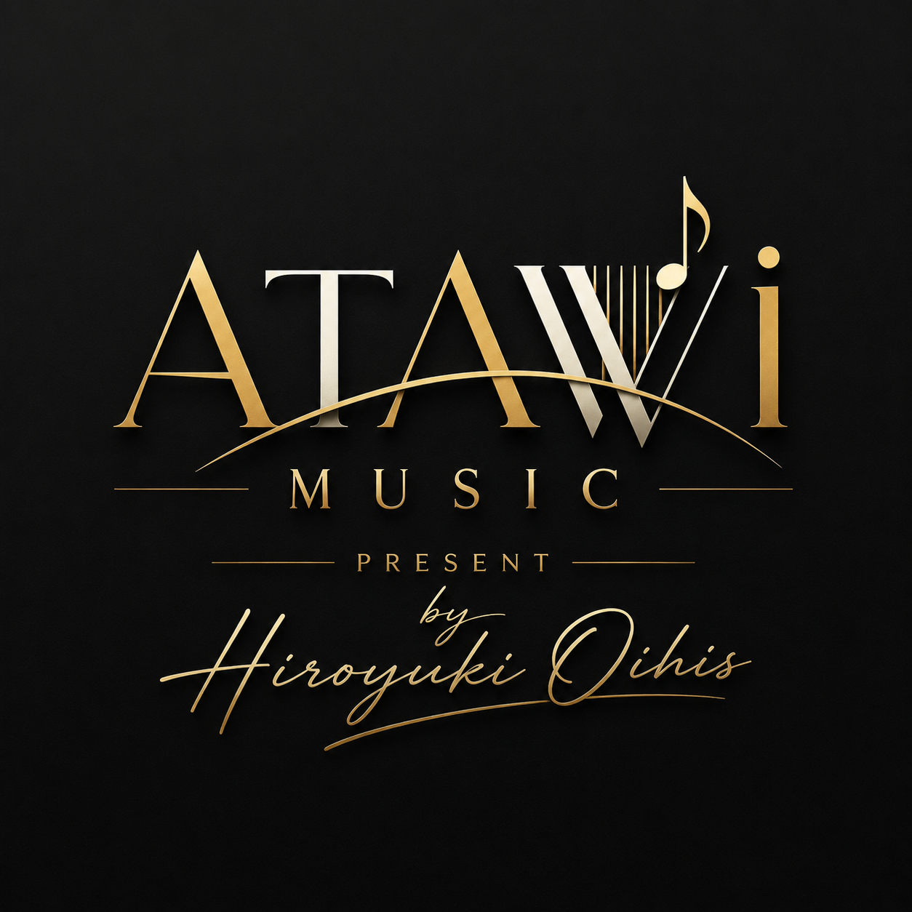

聴きどころ
ペガサスと北極星に二人の関係を重ねた歌を、武道館でのライブ映像から。MISIAのロングトーンが会場に広がるあいだ、飛び続けるものと目印になる星の遠さを想像できる。
YouTubeで「僕はペガサス 君はポラリス」を聴く
配信元 MISIA
MISIAをもう一曲
- Everything（2014年）
- オルフェンズの涙（2015年）
掲載日

ペガサスと北極星に二人の関係を重ねた歌を、武道館でのライブ映像から。MISIAのロングトーンが会場に広がるあいだ、飛び続けるものと目印になる星の遠さを想像できる。
YouTubeで「僕はペガサス 君はポラリス」を聴く
配信元 MISIA
掲載日